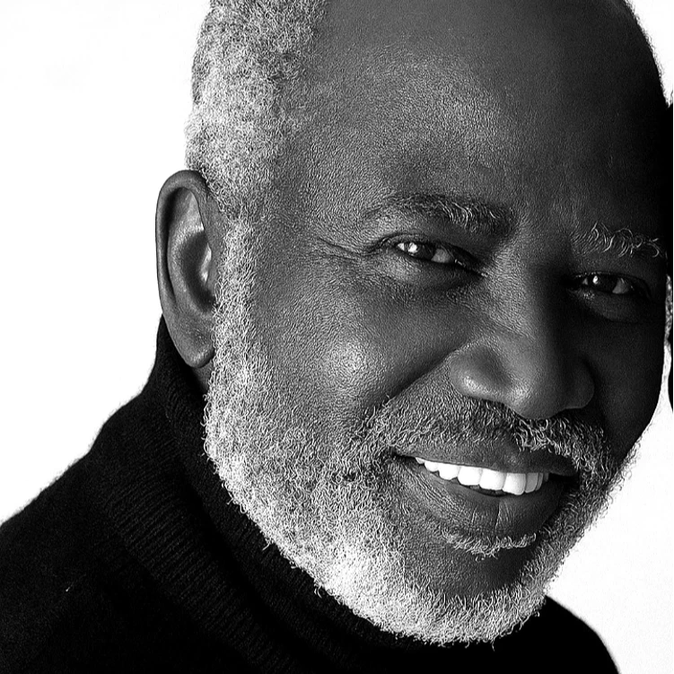

Transforming Potential into Possibility
We bridge the gap between ambition and access through scholarships and mentorship, ensuring poverty never stops a child's right to learn.
Skilling for Service, Building for Life
Professional certification in Culinary Arts and Hotel Management that leads directly to job placements and economic independence.
Investing in Community Resilience
Microgrants and entrepreneurship bootcamps designed to liberate potential and create a ripple effect of leadership across Nigeria.
